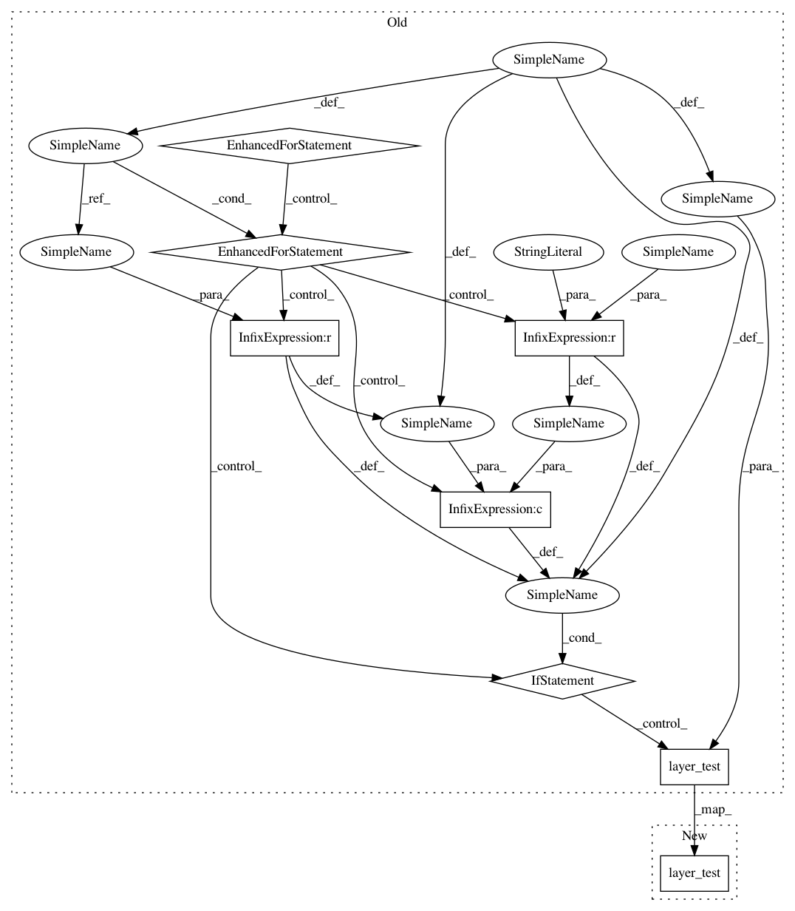

4c015964da4e7e2dfa504461f020408d0692a57b,tests/keras/layers/convolutional_test.py,,test_convolution_3d,#,505
Before Change
input_len_dim2 = 8
input_len_dim3 = 8
for padding in _convolution_paddings:
for strides in [(1, 1, 1), (2, 2, 2)]:
if padding == "same" and strides != (1, 1, 1):
continue
layer_test(convolutional.Convolution3D,
kwargs={"filters": filters,
"kernel_size": 3,
"padding": padding,
"strides": strides},
input_shape=(num_samples,
input_len_dim1, input_len_dim2, input_len_dim3,
stack_size))
layer_test(convolutional.Convolution3D,
kwargs={"filters": filters,
"kernel_size": (1, 2, 3),
"padding": padding,
After Change
input_len_dim2 = 8
input_len_dim3 = 8
layer_test(convolutional.Convolution3D,
kwargs={"filters": filters,
"kernel_size": 3,
"padding": padding,
"strides": strides},
input_shape=(num_samples,
input_len_dim1, input_len_dim2, input_len_dim3,
stack_size))
@keras_test
def test_convolution_3d_additional_args():
In pattern: SUPERPATTERN
Frequency: 3
Non-data size: 8
Instances
Project Name: keras-team/keras
Commit Name: 4c015964da4e7e2dfa504461f020408d0692a57b
Time: 2018-08-29
Author: joelthchao@gmail.com
File Name: tests/keras/layers/convolutional_test.py
Class Name:
Method Name: test_convolution_3d
Project Name: keras-team/keras
Commit Name: 4c015964da4e7e2dfa504461f020408d0692a57b
Time: 2018-08-29
Author: joelthchao@gmail.com
File Name: tests/keras/layers/convolutional_test.py
Class Name:
Method Name: test_conv_1d